正当东方的文明古国如中国、印度和阿拉伯在数学上做出新的贡献时，欧洲却处于漫长的“黑暗时代”（意大利诗人彼特拉克 [1] 用了这个词）。这段历史始于5世纪罗马文明的瓦解，而关于结束的时间却说法不一，可以说是14世纪、15世纪甚或16世纪，那正是欧洲文艺复兴时期。这段长达1000年的黑暗时代被后来的意大利人文主义者称为“中世纪”，以便凸显他们的工作和理想，同时把所处的时代与之区别开来，从而与古希腊和古罗马遥相呼应。
可是，在中世纪以前，希腊和罗马之外的欧洲民族并没有多少作为，至少在人类文明史上没有留下特别值得称道的成就。而在此之后，希腊也没有复兴的迹象。因此，中世纪也好，黑暗时代也罢，除了黑死病的流行以外，它们对于意大利人而言，更多的是人文主义的学术用词。实际上，即使在亚平宁半岛，那个时候数学家的境况也不算太糟。罗马教皇西尔维斯特二世（Sylvester Ⅱ，约945—1003）非常喜欢数学，他能够登基也与这个嗜好有关，可谓数学史上的一大传奇。
这位教皇本名为热尔贝，出生在法国中部，年轻时曾旅居西班牙三年，在一座修道院学习“四艺”，那里由于受阿拉伯人统治而有较高的数学水平。后来他来到罗马，因数学才能得到教皇的赏识，并被引荐给皇帝，又深得皇帝赏识，遂成为王子的老师。以后的几任皇帝也非常器重他，直到任命他做了新教皇。据说他还做过算盘、地球仪和时钟，他撰写的一部几何学著作解决了当时的一个难题：已知直角三角形的斜边和面积，求出它的两条直角边。
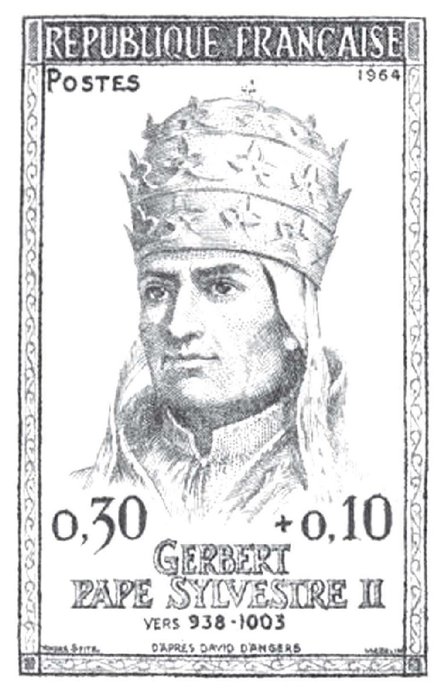
罗马教皇热尔贝
大约就在热尔贝的时代，希腊数学和科学的经典著作开始传入西欧，那是科学史上有名的翻译时代。希腊人的学术著作在被阿拉伯人保存了数个世纪以后，又完好无损地还给了欧洲。如果说从希腊语译成阿拉伯语主要是在巴格达的智慧宫完成的，那么从阿拉伯语译成拉丁语的途径就比较丰富了，比如西班牙的古城托莱多（穆斯林败于基督徒后该城涌入了大量欧洲学者），西西里岛（曾经是阿拉伯人的殖民地），还有君士坦丁堡和巴格达的外交官。而在当年希腊学术中心的亚历山大等地，经过多年的战争洗劫，这些著作早已荡然无存。
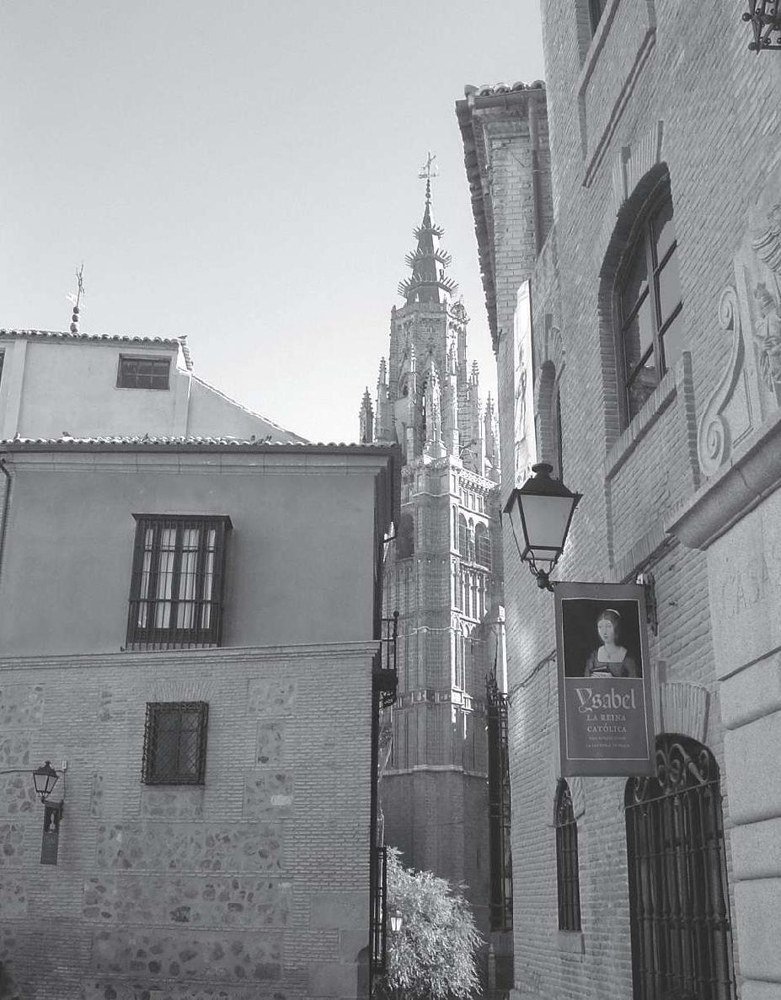
古罗马时期的西班牙首都托莱多。作者摄
在这些被翻译成拉丁文的著作中，除了欧几里得的《几何原本》、托勒密的《地理志》、阿基米德的《圆的度量》和阿波罗尼奥斯的《圆锥曲线论》等希腊经典名著以外，还有阿拉伯人的学术结晶，如花拉子密的《代数学》，这些译作主要是在12世纪完成的。那时，经济力量的重心从地中海东部缓慢地移向西部。这种变化首先源自农业的发展，种植豆类使得人类在历史上首次有了食物方面的保证，人口因此迅速增长，这是导致旧的封建社会结构解体的一个因素。
到了13世纪，不同种类的社会组织在意大利层出不穷，包括各种行会、协会、市民议事机构和教会，等等，它们迫切希望获得某种程度的自治。重要法律的代议制度有了发展，终于产生了政治议会，其成员有权做出决定，对于选举他们的全体公民具有约束力。在艺术领域，哥特式建筑和雕塑的经典模式已经形成，文化生活方面则产生了经院哲学的方法论，这方面的杰出代表是圣托马斯·阿奎那（T.Aquinas，约1225—1274），上一章结尾提到的法国哲学家马利坦便是他的门徒。这位西西里岛出生的基督教哲学家从亚里士多德的理论中获得了许多启示，保守的教徒们第一次正视科学的理性主义。
在相对开放的政治和人文氛围里，数学领域也不甘落后，出现了中世纪欧洲最杰出的数学家斐波那契（L.Fibonacci，约1170—约1250），他比婆什迦罗出生晚但比李冶出生早。斐波那契出生在比萨，年轻时他随身为政府官员的父亲前往阿尔及利亚，在那里接触到阿拉伯人的数学并学会了用印度数字做计算，后又到了埃及、叙利亚、拜占庭和西西里等地，学到了东方人和阿拉伯人的计算方法。他回到比萨后不久，就完成并出版了著名的《算经》。此书又名“算盘书”，这里的算盘指用于计算的沙盘，而非算盘。
《算经》的第一部分介绍了数的基本算法，采用的是六十进制，斐波那契引进了分数中间的那条横杠，这个记号一直沿用至今。《算经》的第二部分是商业应用题，其中包括中国的“百钱买百鸡”，看来张丘建提出的这个问题早就传到了阿拉伯世界。《算经》的第三部分是杂题和怪题，其中以“兔子问题”最为引人注目。兔子问题是这样的：由一对小兔开始，一年后将会有多少对兔子？其中，每对兔子每月能生产一对小兔，每对小兔过两个月就能成为可以繁殖的大兔。
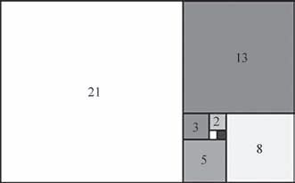
依阿基米德螺线排列的斐波那契数
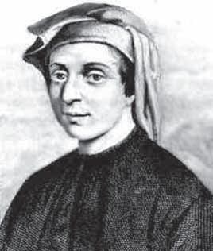
宫廷数字家斐波那契
依据“兔子问题”，后人得到了所谓的斐波那契数列：
1，1，2，3，5，8，13，21，34，…
这个数列的递归公式（数学家发现的最早的递归公式之一）是：
F1 =F2 =1,Fn =Fn-1 +Fn-2 (n≥3)
有意思的是，这个整数数列的通项竟然是一个含有无理数
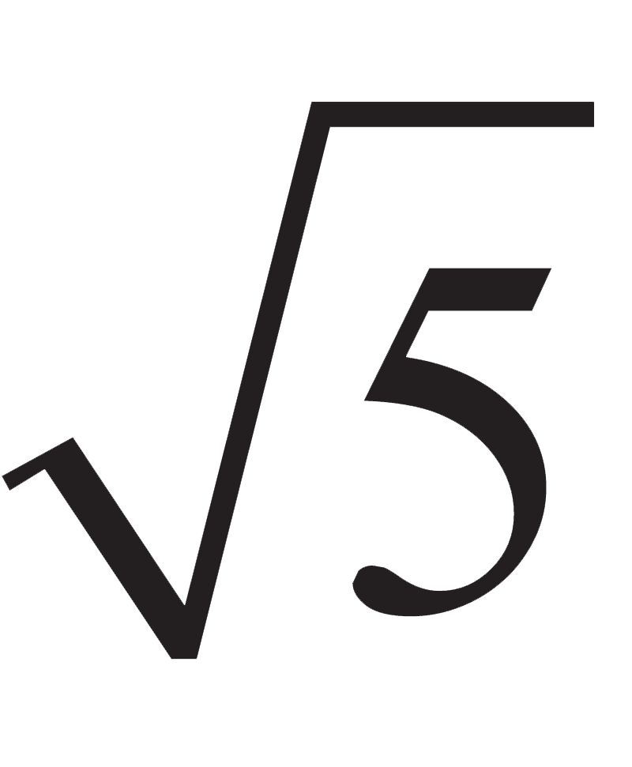
的式子，即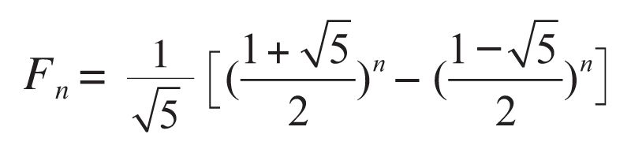
斐波那契数列有许多重要的性质和应用。例如，当n→∞时，
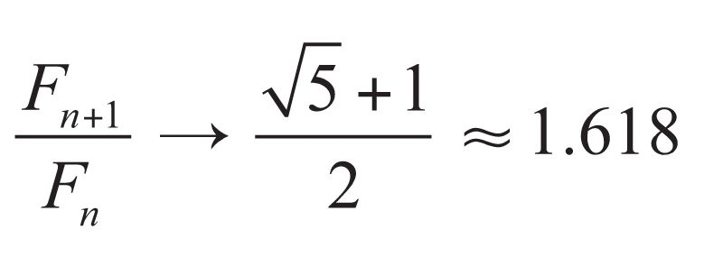
这便与早年毕达哥拉斯从线段比例中提取出来的黄金分割率产生了联系。除了在许多数学分支中都能看见以外，斐波那契数列还可以帮助解决诸如蜜蜂的繁殖、雏菊的花瓣数和艺术美感等方面的问题。
大约在1220年，斐波那契受到到访比萨的神圣罗马帝国皇帝腓特烈二世（Friedrich II，1712—1786）的召见，皇帝的随从向他提出了一系列数学难题，他逐一予以解答。其中有一道题是求解三次方程3 x+2x2 +10x=20，斐波那契用逼近法给出了六十进制的答案，居然精确到小数点后9位。从那以后，他与这位酷爱数学的皇帝及其随从保持着长期的通信联系。（另一个说法是，他被皇帝聘请到宫里，成为欧洲历史上的第一个宫廷数学家。）这位皇帝可谓精力充沛，他还是西西里和德意志的国王。
斐波那契接下来出版的一部重要著作《平方数书》就是献给腓特烈二世的，书中提出了这样一个深刻的断言，即x2 +y2 和x2 –y2 不全是平方数。或许这是第一本专论某类问题的数论专著，它奠定了斐波那契作为数论学家的地位，使他成为介于丢番图和费尔马之间的最有影响力的数论学家。综观斐波那契的成就，他既在欧洲数学的复兴中起到先锋作用，又在东西方数学的交流中起到桥梁作用。16世纪意大利最顶尖的数学家卡尔达诺这样评价他的前辈：“我们可以假定，所有我们掌握的希腊以外的数学知识都是由于斐波那契的出现而得到的。”
从斐波那契留下来的画像来看，他的神韵颇似晚他三个世纪出生的同胞画家拉斐尔（Raffaello Sanzio，1483—1520），他常常以旅行者自居。人们称他是“比萨的列奥纳多”，而把《蒙娜丽莎》的作者称为“芬奇的列奥纳多”。1963年，一群热衷研究兔子问题的数学家成立了国际性的斐波那契协会，并着手在美国出版《斐波那契季刊》（The Fibonacci Quarterly ），专门刊登研究和斐波那契数列有关的数学论文。同时，在世界各地轮流举办两年一度的国际斐波那契数及其应用大会。这在世界数学史上可谓一个奇迹或神话。
随着封建社会结构的瓦解，意大利城邦力量的增强，西班牙、法国和英国国家君主制的相继出现，世俗教育的兴起，新航路的开辟和新大陆的发现，哥白尼“日心说”的提出（哥伦布 [2] 抵达新大陆时哥白尼正在克拉科夫大学读书，克拉科夫这座波兰的中等城市在21世纪初曾同时住着两位诺贝尔文学奖得主——米沃什和辛波丝卡），活字印刷术的发明和应用等，一个具有全新精神面貌的新时代诞生了。这个时代回顾古典学术、智慧和价值观，从中汲取灵感，被称为“文艺复兴时期”。
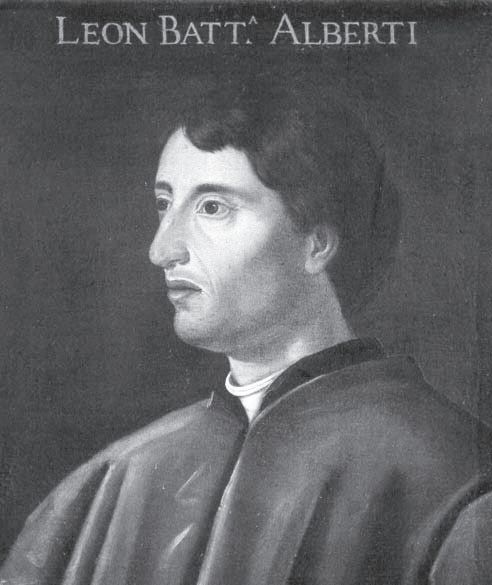
人文主义者阿尔贝蒂
在文艺复兴时期，意大利人表现出这样一种人文主义理想，即人是宇宙的中心，他的发展能力是无限的。那时候的一部分人产生了一种信念，即人们应该努力去获得一切知识，并尽量发展自己的能力。于是，人们就在知识的各个方面，以及身体锻炼、社会活动和文学艺术等方面，探求技能的发展。这样的人被称为“文艺复兴人”（Renaissance man）或“全才”（Universal man），其最优秀的例证是集雕刻家、建筑师、画家、文学家、数学家、哲学家身份于一身的阿尔贝蒂（L.B.Alberti，1404—1472），他还擅长马术和武术。
布鲁内莱斯基作品：佛罗伦萨主教堂
阿尔贝蒂是佛罗伦萨一位银行家的私生子，出生在热那亚，但少时就随父亲学习数学，很早便用拉丁文创作喜剧，后来又获得法学博士学位，还担任过罗马教廷秘书。阿尔贝蒂利用他掌握的几何知识，在历史上首次找到在平面木板上或墙壁上绘制出立体场景的规则，这对意大利的绘画与浮雕水平的提升起到了立竿见影的效果，产生了准确、丰满、几何形的合乎透视画法的绘画风格。“一个人只要想做，他就能做成一切事情。”阿尔贝蒂说到做到，“我希望画家应当通晓全部自由艺术，但我首先希望他们精通几何学。”
在阿尔贝蒂之前，佛罗伦萨诞生了一位伟大的建筑师布鲁内莱斯基（F.Brunelleschi，1377—1446），如今这座艺术之都最吸引游客的大教堂便是他的杰作。有一种说法，布鲁内莱斯基自幼酷爱数学，为了运用几何才学习绘画，这样当然成不了大家，因此后来他成了建筑师和工程师，但他是最早研究透视法的人。阿尔贝蒂正是因为与像布鲁内莱斯基那样的前辈来往密切才对透视法特别感兴趣，他创立的透视法的基本原理如下：
在我们的眼睛和景物之间安插一块直立的玻璃屏板，设想光线从一只眼睛出发射到景物的每一个点上，那么这些光线穿过玻璃时所有点的集合就会产生一个截景。这个截景给眼睛的印象应该和景物一样，所以作画逼真的问题就是在玻璃（画布）上画出一个真正的截景。阿尔贝蒂注意到，如果在眼睛和截景之间安插两块玻璃，则截景将有所不同；而如果眼睛从两个位置看同一个景物，玻璃屏板上的截景也将有所不同。
无论在何种情况下，阿尔贝蒂提出的“任意两个截景之间有什么样的数学关系？”这个问题是射影几何学的出发点。
除此以外，阿尔贝蒂还发现，在作画的某个实际图景里，画面上的平行线（除非它们与玻璃屏板或画面平行）必然相交于某一点。这个点就是“没影点”，它的出现成为绘画史上的一个转折点。在此之前的画家很少有人能画得那么精确，而在此之后的许多画家则都遵循这一原则，当然没影点本身不必出现在画面上。这个没影点的来历或存在的原因如下：实景上的任何两条平行线与观测点各自组成两个相交的平面，其交线与玻璃屏板的交点就是没影点。正因为透视法和没影点这两项工作，阿尔贝蒂成为文艺复兴时期最重要的艺术理论家。
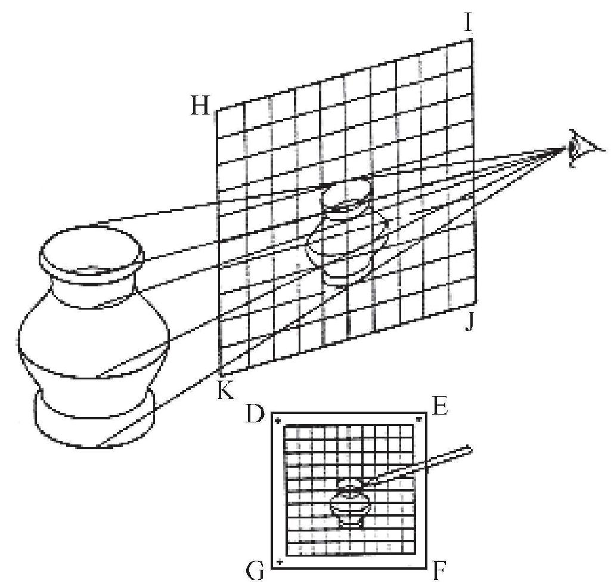
阿尔贝蒂的透视图
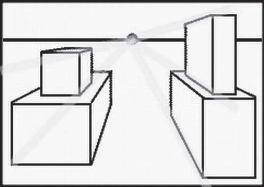
阿尔贝蒂的没影点
在阿尔贝蒂的所有工作中，他始终服务于当时佛罗伦斯流行的“有公民意识的人文主义”的社会观。例如，他写出了第一本意大利语文法书，认为佛罗伦萨当地语言和拉丁语同样“正规”，因而可以用作文学语言。他还写出了一本密码学的先驱性作品，其中有已知的第一张频率表和第一套多字母编码方法。他所写的一篇对话录《论家庭》，视有所成就和为公众服务为美德，这充分体现了讲究公益精神的人文主义。据文艺复兴时期的画家瓦萨里（G.Vasari，1511—1574）描述，阿尔贝蒂死时“宁静而满足”。
在阿尔贝蒂年近50岁时，佛罗伦萨郊外的一座叫芬奇的村庄里诞生了文艺复兴时期最光辉灿烂的人物——列奥纳多·达·芬奇（Leonardo da Vinci，1452—1519）。列奥纳多的母亲是一个村姑，后来嫁给了一名工匠。列奥纳多的父亲是佛罗伦萨的一位公证人和地主，由于几任妻子迟迟未能生育，本是私生子的列奥纳多就被当作嫡子在家中抚养，并接受了初等教育：阅读、写作和算术。据说列奥纳多是以学徒的身份开始学习绘画的，他30岁以后一度专心于高等几何和算法，他创作《最后的晚餐》和《蒙娜丽莎》分别是在中年和晚年。
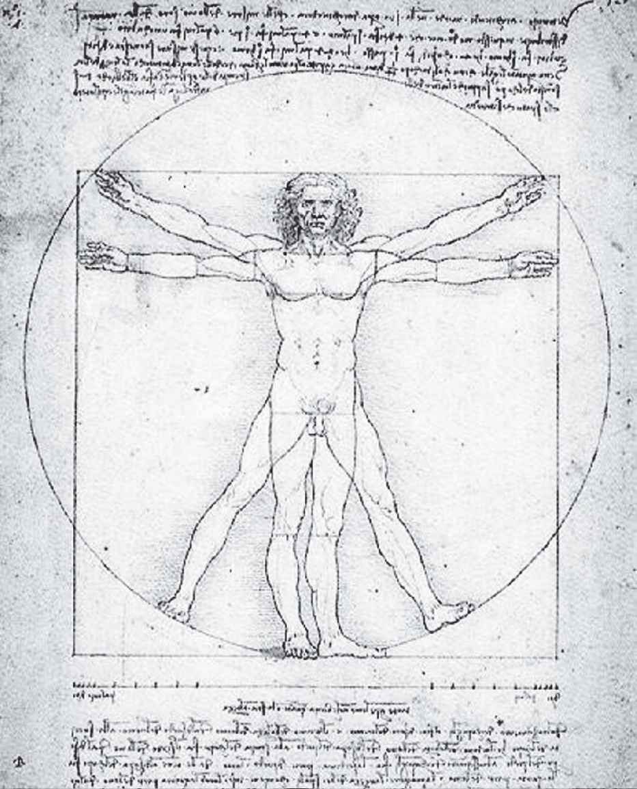
达·芬奇的素描《维特鲁威人》
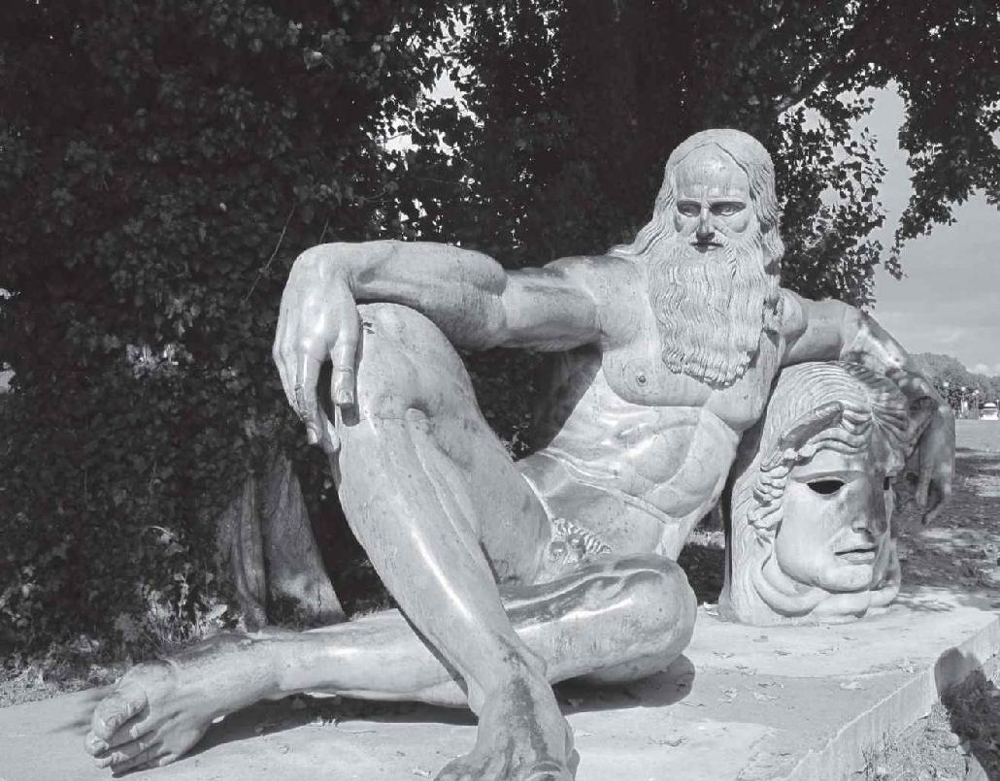
达·芬奇塑像，法国安伯瓦兹
列奥纳多在艺术方面的成就每个人都知道，这里就不再赘述了，他的大名甚至帮助21世纪的一本悬疑小说成为世界级畅销书。他认为一幅画必须是原形的精确再现，坚持认为数学的透视法可以做到这一点，并称它是“绘画的舵轮和准绳”。大概正因为如此，20世纪的法国先锋派画家马塞尔·杜尚（M.Duchamp，1887—1968）才会标新立异地创作出长胡子的《蒙娜丽莎》。列奥纳多在几何学方面的主要成就是给出了四面体的重心的位置，即在底面三角形的重心到对顶点的连线四分之一的位置上。然而，在求等腰梯形的重心问题上他却犯了错误，给出的两个方法中只有一个是正确的。
在艺术和数学领域之外，列奥纳多也是成绩斐然。他观察天体，在笔记本上偷偷写下了“太阳是不动的”这句话。虽然不尽准确，但可以说他比哥白尼更早发现了“太阳中心说”，这与《圣经》上所讲的“神造日月，使之绕地而行”的结论相悖。鸟的飞翔给他以启示，在探讨了空气阻力以后，他设计出第一台飞行器。今天有的动力学家认为，假若当时有轻燃料，他可能已经飞上天了。他还亲自解剖了30多具尸体，试图弄清人体结构和生命的奥秘。但所有这些都半途而废，尽管如此，这些实践使他对绘画对象的观察更加精细。
同样是在15世纪，在欧洲的北方——德国巴伐利亚的纽伦堡，也出现了一位多才多艺的艺术家、一位文艺复兴时期的人物，他就是阿尔布雷特·丢勒（A.Dürer，1471—1528）。丢勒的人文主义思想使其艺术具有知识和理性的特征，他一生大约有20年时间在荷兰、瑞士、意大利等地旅行或侨居，同时与比他稍年轻的同胞、宗教改革家马丁·路德（Martin Luther，1483—1546）周围的人有密切的联系。他的创作领域十分宽广，包括油画、版画、木刻、插图等，显而易见，他深谙阿尔贝蒂发明的透视法。
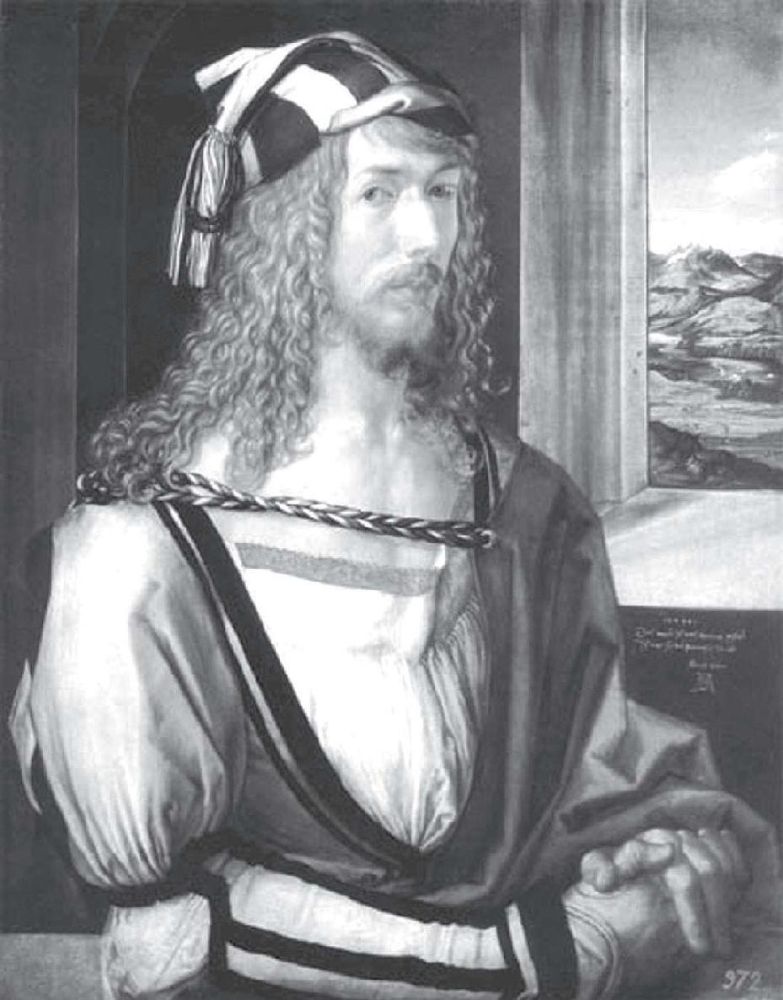
丢勒自画像
丢勒被视为文艺复兴时期所有艺术家中最懂数学的人，他的著作《圆规直尺测量法》主要是关于几何学的，也顺便提到了透视法。书中谈到了空间曲线及其在平面上的投影，他还介绍了外摆线，即一个圆滚动时圆周上一点的运动轨迹。丢勒甚至还考虑了曲线或人影在两个或三个相互垂直的平面上的正交投影，这个想法极其前卫，直到18世纪才由法国数学家蒙日发展出一个数学分支，叫“画法几何”，蒙日也因此在数学史上留名。
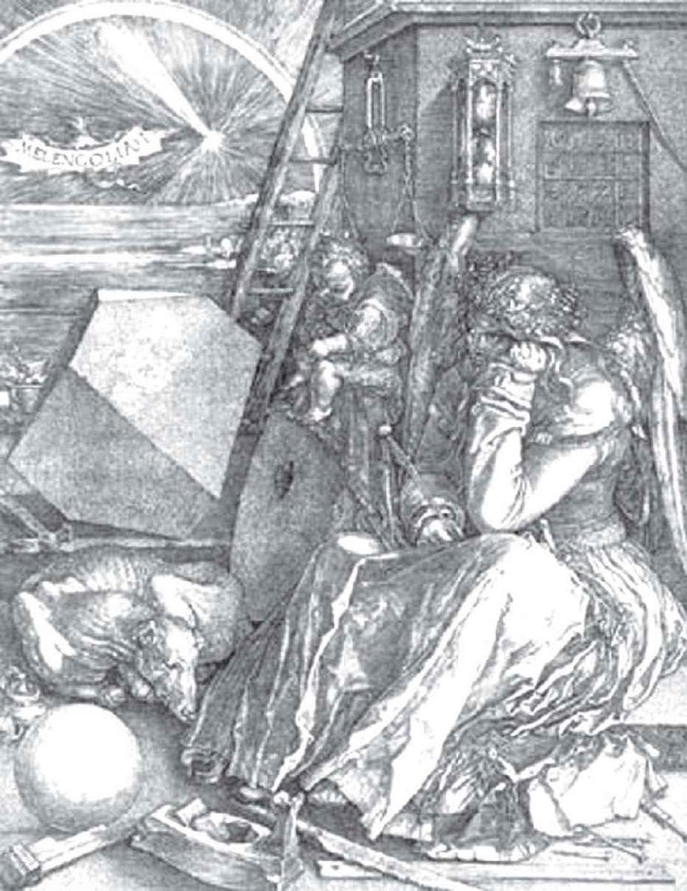
丢勒的版画《忧郁》
在丢勒于1514年创作的版画《忧郁》中，画面的前方有个左手扶额做沉思状的坐着的男子，背景里有一个四阶幻方，这个幻方（如下页表，各行、列或对角线以及角落和中央的5个二阶方阵的四数之和均为34）与我国南宋数学家杨辉著作中所引用的例子只是行列的次序不同。
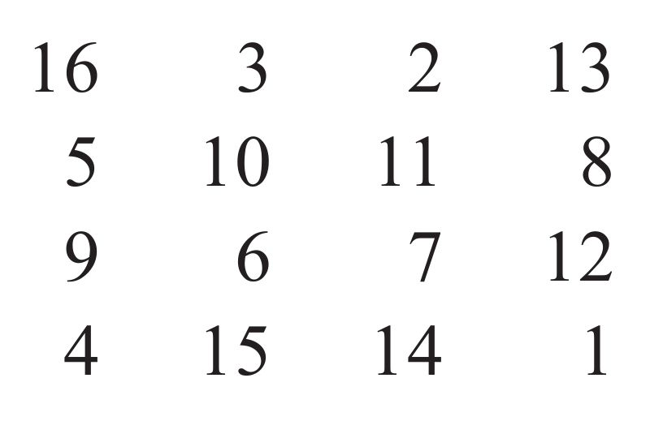
幻方的出现无疑加重了画面的忧郁气氛，更有意思的是，幻方最后一行的中间两个数恰好组成了画作的完成年份，即1514。
一般来说，在绘画语言中，色彩更长于表现情感，线条更长于表现理智。德意志民族常被认为更富有理性思维，就有了德国画家擅长使用线条的说法。无论正确与否，至少丢勒确实如此。他以精密的线描，更直接地表现出观察的精微和构思的复杂。他的丰富的思维与热烈的理想结合在一起，产生了一种独特的效果。除了绘画和数学以外，丢勒也致力于艺术理论和科学著作的写作，包括绘画技巧、人体比例和建筑工程，他还亲自为这些书绘制插图。
[1] 彼特拉克（F.Petrarca，1304—1374），意大利诗人，被誉为“文艺复兴之父”。
[2] 哥伦布（C.Columbus，1451—1506），探险家、航海家。